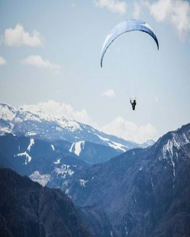
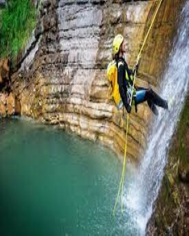

1) BUNGEE JUMPING
Bungee jumping is an action-filled recreational activity that involves head-first jumping from a tall structure with an elastic cord attached into
participants' feet. Bungee jumping is one of the most enjoyed extreme sports and available in almost every destination in the world. It started as
the coming-of-age ceremony in a small village on South Pentecost Island in Vanuatu. The young men jump from the top of a 30 meter high tree to demonstrate
their courage as an adult. They tied jungle vines around their ankles so that they would not hit the ground. And from then it started to become a sport in
which people take part and it was named bungee jumping. In 1987 A.J.Hackett became world famous when he jumped from the Eiffel Tower in Paris.The idea quickly spread around the world. The most crucial part of bungee
jumping is being able to gather enough courage to do it. Also, there are precautions to take for security purposes. Bungee jumping may have health risks for
people who are overweight or with injuries. Pregnant women, people with heart problems and high blood pressure are not advised to do bungee jumping. If you are
in doubt, make sure to consult to your doctor before deciding.Bungee jumping has several dangers. The rope has to be the right size for your weight, or it may
break. The safety harness has to fit properly or the force of the drop could cause a person's bones to break. The rope has to be the right length or a person
could hit the ground before being stopped by the rope. Although bungee jumping can be enjoyed in every time of the year, it is good to know that some weather conditions such as fog or snow can hugely impact your overall
experience. Therefore summer season can be considered as the best time for bungee jumping since the weather is usually warm and dry.
EQUIPMENTS USED/REQUIRED :
|
BEST LOCATIONS:
|
2) MOUNTAIN BIKING
Mountain biking is a sport in which the participants ride a bike off road. The terrain can be desert, mountain, rocks, and many others. There are many categories
of this sport like downhill, cross country, dirt jumping, etc. The riders shall carry equipment to repair their broken bikes. Along with it, they should carry
backpack having useful things because they racing is far from the civilization. In this racing sport, the rider performs moderate to high level of technical riding
on off- road locations and compete with other riders while maintaining balance on the bike. Depending on the variant, the bike riders have to reach the finishing
line as fast as possible. The first three riders to finish the race after finishing the required laps are declared winners.Mountain biking was first originated at
California in the 1970s as a fringe sport. Velo Club Mount Tamalpais, California first established mountain biking as a sport and during 1976 to 1979, they started
organizing Downhill Mountain biking races regularly, which drew the attention of public as well as media. The first National Mountain Biking Championship was held
in USA in the year 1983 and the sport soon started gaining popularity in other countries mostly in Europe and Australia. If you are new to mountain biking, picking
the right bike for yourself can be a complicated business. There are different bikes are available for every type of rider and terrain. Although summer is the best
season to enjoy mountain biking since the weather is generally dry and more welcoming, mountain biking can be practiced in every season.
EQUIPMENTS USED/REQUIRED :
|
BEST LOCATIONS:
|
3) PARAGLIDING
Paragliding is a type of extreme sport found in the early 1980s by people interested in aerial sports, and it allows one to run off the slopes with
free parachutes. Paragliding is generally more accessible than other extreme sports since it does not require a special take off or a landing track.
Paragliding is also the fastest developed air sport in the world.First you have to take the parachute to the hill where you will make your jump. Be aware
that the weight of parachute can vary between 6-15 kg. When you climb up the hill, all you need is a paragliding wing. As the paragliding pilot, you should
be careful to make sure that the field is not obstructed by anything such as trees or structures. The paragliding pilot should run down the hill, and there
is no need to run too fast because the wind will help enough already. The type of sports parachute used in paragliding is designed for easier take off and
landing. Paragliding is well developed in Turkey and worldwide. The passion of paragliding was started by Garvit Sharma, who designed advanced gliding parachutes.
Later in 1961, it was modified technically and soon the phase of para commander started. In the same line, sail wing was modified by David Barish which was used
for recovering NASA space capsules. After 1980's, equipment started to modernise and this sport got a new dimension.If you want to try this sport, there are a few
things to consider in terms of timing. The season is not very important for paragliding, however if it is too windy, you shouldn't do it. When the weather is too windy, you can lose your way in the
direction of the wind and you mostly likely won't be able to control yourself.
EQUIPMENTS USED/REQUIRED :
|
BEST LOCATIONS: |
4) SCUBA DIVING
Scuba diving is perhaps the best way to explore the fantastic underwater world, getting up close with the wonders and the secrets of this marine universe,
with its breathtakingly colourful and diverse inhabitants. Floating below the azure waters, you are in an ethereal-sometimes hostile-environment, with a
limited supply of air on your back and with only your fellow divers as your lifelines. Over the years and the decades, scuba diving has evolved into a
non-competitive but a very exciting adventure sport. CUBA is the short form of 'Self Contained Underwater Breathing Apparatus'. It was developed in the
mid-1940s by the world famous underwater explorer and conservationist, Jacques-Yves Cousteau, for the French Navy during the Second World War. After the war,
however, diving turned into a recreational sport, which has since been taken up by millions worldwide. Gear for modern scuba diving is made up of one (or more)
gas cylinder secured to the diver's back. This gas tank is joined to an air hose and the demand (or diving) regulator-this latter device controls the flow of air,
so that the air pressure in the diver's lungs is the same as the pressure of the water. Among other gear/equipment used in diving is the buoyancy control device
(BCD), basically an inflatable jacket that controls your buoyancy by adding or releasing air.From autumn, through the winter months, and into spring, is when you
can encounter the best conditions for scuba diving (October/November to April/May). In the Andamans, peak season is between December and February.
EQUIPMENTS USED/REQUIRED :
|
BEST LOCATIONS:
|
5) CANYONING
Canyoning is an outdoor recreational activity that includes hiking, climbing, abseiling, swimming and even cliff jumping in a natural landscape.
Canyoning is all about exploring hard-to-reach natural areas by mostly following a water route down through numerous natural rock formations. The
sport is a combination of many wilderness travel skills and one of the most satisfactory outdoor activities with a high sense of accomplishment.
Canyoning is an exploration thrill and is available in many parts of the world with various amazing routes. At first, you need to participate in a
not-so-long guided tour or a class and try your body limits if you are fit or not for the sport. There are beginner routes and exploring caves in
most canyoning centers as well as many routes for experienced canyoners. Warm temperatures and moderate levels of water are the two main conditions
to keep in mind for canyoning. Although much of it depends on the location of the canyoning route, summer and early autumn are the best seasons to
enjoy canyoning. It is also best for you to start canyoning in the early morning since the weather would be much cooler and you would have plenty of
time to discover.
EQUIPMENTS USED/REQUIRED :
|
BEST LOCATIONS: |